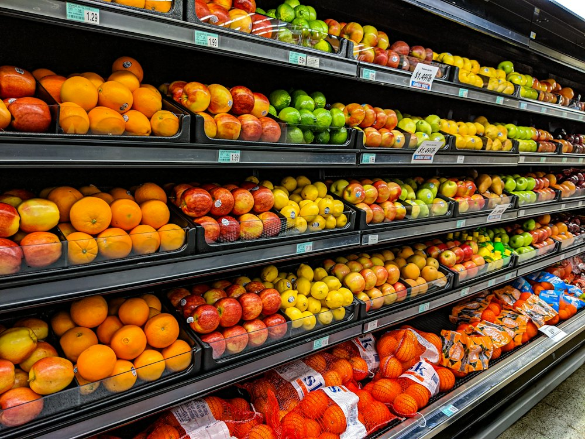

SMALL · Asia Park
Магазин · Супермаркет · Алматы
Рейтинг 2ГИС
★ 4.3
1 313 оценок
Год открытия
1999
сеть Small работает с 1999 г.
Средний чек
≈6 000 ₸
оценка по типу заведения
Адрес и часы
📍 ТРК Asia Park, пр. Райымбека, 514а, Алматы · Ауэзовский район
🕒 пн-вс 09:00-23:00
О заведении
Супермаркет сети SMALL.
Популярные товары
Рядом в справочнике
Shipudim · Six Coffee+Wine · Small Food · Панфилова · Smug Burger BBQ Bar · Spiros · Starbucks